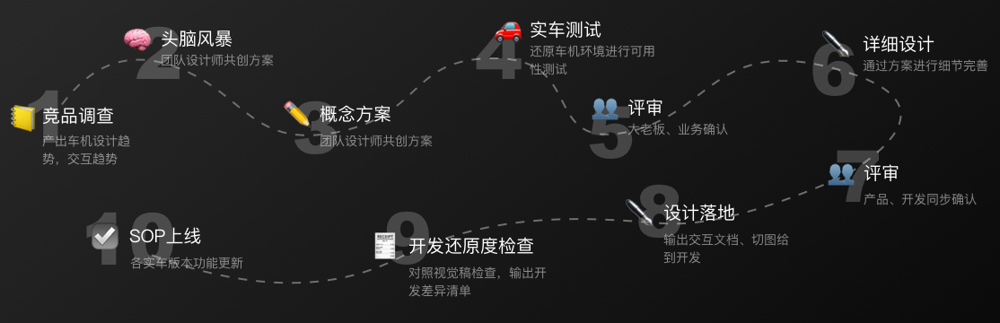

背景：年款2.0版本将基于目前用户反馈较多的的主界面应用切换交互逻辑认知成本高、增加自定义屏实现快捷操作等问题，对车机主界面进行改版，给用户全新的交互体验。
设计目标：寻找差异性，制造卖，提供便捷的同时满足用户个性化需求
我的职责：参与设计团队小组头脑风暴，设计D方案
结果：在三个方案中，选择了A方案（欲知原因，敬请下滑到「最终设计」）；此版本首页上线日期为2022.7
设计流程 Design Flow
不同于互联网产品可以小步快跑，多次迭代的设计流程，车机设计迭代成本大，更新率低和安全原因，要求车机设计需要有很高的完成质量，包括其易用性和可拓展性，每次设计都需要充分的考虑和验证。
数字座舱硬件介绍 Hardware Introduction
车机的除了考虑GUI图形界面交互，还要考虑硬件交互（实物按键、方向盘）、VUI声音系统交互，周围环境的自然交互，这些组成了数字座舱的交互生态（可以理解类似apple手表、手机和MacBook这些硬件组成的一个生态）。而我们的工作主要聚焦在GUI上，广汽蔚来有三块屏幕，某些数据（例如音乐的信息）互通互联。A1屏是行车信息屏，用于显示电量、车速等信息，不同场景下，显示的信息不一样；A2屏为分享屏，默认聚焦显示导航及多媒体等常用娱乐信息及行车辅助信息；A3为中控副屏，默认显示空调，控制车辆相关状态参数调整设置各种车机扩展应用入口。
需求分析 Analysis
竞品分析 Competitive product analysis
为了解现在车机设计趋势，我们参考分析竞品做法，来源于2个途径：1、车展上搜集的录制视频；2、参考专业车机博主的测评视频。分析的维度有：首页功能、交互（功能布局、交互逻辑、信息层级）、车机特点与不足；放置在首页的导航如何规划、场景重叠使用情况。 通过分析得出助力分析的设计论有：1、首页的布局都是导航背景+卡片栏设计（除了奔驰的MBUX使用icon的方式）；2、针对场景重叠的问题，卡片设计、固定栏、浮窗可以优化这个问题。但因为我们的仪表盘也会有反馈（部分车机也有），所以适当展现音乐、蓝牙来电等的反馈。（埃安不同模式下，仪表盘显示的内容不一样）；3、首页都会提供快速入口和搜索栏。根据我们现有的导航功能做首页规划也可以和竞品做到差异化。
概念方案设计与验证 Concept Design vertification
团队设计成员通过头脑风暴后得出4个可行交互概念方案，方案通过细化交互逻辑进一步验证可用性情况，同时开始进行视觉概念设计。 4个概念方案都在实车上进行了静态测试，最后设计团队主推A方案，评审会议上保留B、D方案待选择。
最终设计 Final Design
最后评审会议中，产品、开发和老板侧也是选择了A方案。根据A方案，交互和视觉根据车机的可用性原则，继续细化延展剩余的待设计内容。
方案A：左卡片右导航布局，可全屏可半屏显示功能
方案B：左菜单栏+任务卡片区，右侧为应用展开区域
方案C：全屏导航界面，左侧悬浮菜单栏，切换应用时全屏切换（但因为驾驶模式下，滑动交互的成本很大，且有时候会遮挡住其他模块内容，弃之）
方案D：右卡片左导航布局，点击对应区域则进入该功能全屏项
需求背景：在目前的VUI的功能基础上新增AI持续监听模式
我的职责：负责迭代交互设计，设计内小组设计汇报，产品研发设计方案讲解
结果：于2021年12月 SOP上线
设计挑战：VUI的和GUI的反馈，要考虑每个场景下，哪个是最优的。例如行车中，VUI更优因不需要用户眼睛和专注力不需要离开道路；但在汽车未启动时，使用GUI
需求背景：根据用户反馈和产品功能迭代，持续优化多媒体模块
我的职责：主要负责多媒体模块交互：1、喜马拉雅VIP购买功能；2、蓝牙音乐功能；3、多媒体模块细节交互完善
结果：SOP更新上线
项目背景：长城新款汽车使用高德地图作为底层地图技术，根据长城汽车的车机特性为其做导航功能适配
团队人员：3位交互设计师（负责不同的模块设计）
我的职责：负责如图下几个模块的设计
设计挑战：1.敏感地判断改动功能是否会牵涉其他设计师负责的模块，如果有，则需要即时拿出来设计内部讨论统一，或者每天找一个固定的时间，快速过一下大家认为有需要协同拉通的地方。2.导航中卡片信息多，因为布局高度有限，卡片会出现遮挡的情况。为了解决这个问题，我们归纳导航中所有卡片重叠情况，制定卡片信息的优先级为：区间电子眼 > 服务区、收费站 > 行中解释卡片> 目的地停车场。
返回顶部